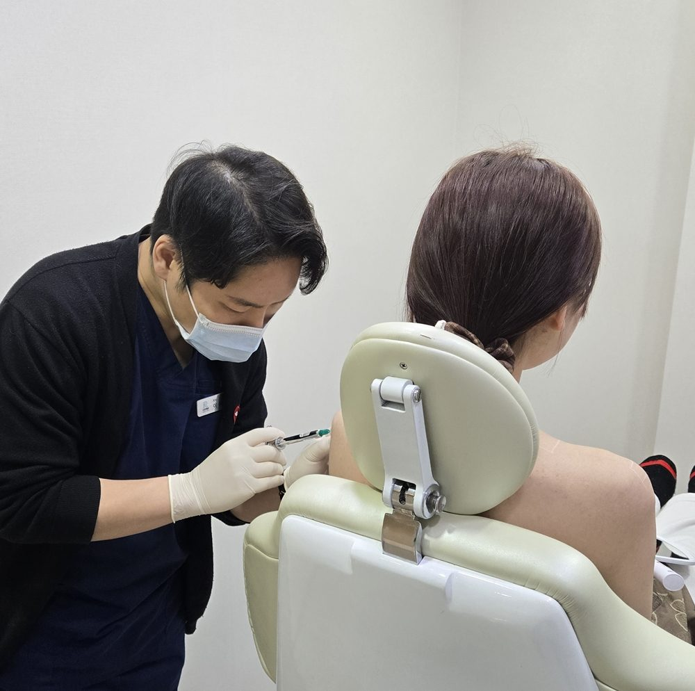

어깨라인 때문에 옷을 입을 때마다 고민이신가요?
오프숄더나 민소매를 입었을 때 어깨가 좁아 보이거나, 목에서 어깨로 이어지는 라인이 밋밋해 보이는 경우가 있습니다. 특히 드레스나 웨딩 촬영, 중요한 일정 등을 앞두고 직각어깨와 매끄러운 어깨라인을 고민하시는 분들이 많습니다. 이런 고민으로 알아보는 시술 중 하나가 바로 어깨필러입니다.
최근에는 압구정, 강남 일대에서도 어깨필러를 알아보는 분들이 늘고 있는데요. 그렇다면 어깨필러 잘하는곳을 선택할 때 무엇을 확인해야 할까요?
단순히 가격이나 주입 용량만 비교하기보다는 개인의 체형을 정확히 분석하고, 어깨 구조에 맞춰 자연스러운 라인을 디자인할 수 있는 의료진을 선택하는 것이 중요합니다. 오늘은 어깨필러의 원리부터 시술 기준, 적정 용량, 가격, 유지기간과 부작용까지 자세히 알아보겠습니다.
어깨필러는 히알루론산 필러 등을 이용해 어깨 끝부분과 주변의 꺼진 부위에 볼륨을 보완하는 시술입니다. 목에서 어깨로 이어지는 경사진 라인과 어깨 끝부분의 볼륨을 고려해 전체적인 상체 실루엣을 정돈하는 것이 목적입니다.
특히 다음과 같은 고민이 있는 분들이 상담을 고려할 수 있습니다.
다만 어깨필러는 골격 자체를 바꾸거나 승모근을 줄이는 시술은 아닙니다. 따라서 승모근 발달, 골격 구조, 지방 분포 등에 따라 기대할 수 있는 변화가 달라집니다.
어깨필러는 얼굴 필러와 달리 넓은 면적과 움직임이 많은 부위를 다루기 때문에 더욱 세심한 디자인과 해부학적 이해가 필요합니다. 병원을 선택할 때는 다음 다섯 가지를 확인해 보세요.
어깨필러는 단순히 꺼진 부분을 채우는 것이 아닙니다. 정면뿐 아니라 측면과 후면에서 어깨의 높이, 기울기, 좌우 대칭을 함께 살펴야 합니다. 상담 과정에서 의료진이 직접 체형을 확인하고 원하는 어깨라인을 충분히 논의하는지 확인하는 것이 좋습니다.
사람마다 쇄골 길이, 어깨 기울기, 삼각근과 승모근의 발달 정도가 다릅니다. 같은 용량을 주입하더라도 체형에 따라 결과가 달라질 수 있으므로, 정해진 용량을 일률적으로 적용하기보다 현재 어깨 상태에 맞춰 주입 부위와 양을 계획해야 합니다.
사용하는 필러의 종류와 특성, 예상 사용량, 주입 위치 등을 충분히 설명받아야 합니다. 특히 바디필러는 제품별 허가사항과 사용 목적을 확인하는 것이 중요합니다. 제품명과 정품 여부, 실제 사용량을 확인할 수 있는지도 상담 시 질문해 보세요.
필러는 붓기, 멍, 압통, 결절 등의 부작용이 발생할 수 있으며 드물지만 혈관 관련 심각한 합병증도 발생할 수 있습니다. 해부학적 구조에 대한 이해뿐 아니라 이상 반응 발생 시 신속하게 대응할 수 있는 체계가 중요합니다.
시술 직후에는 붓기나 멍으로 인해 최종적인 어깨라인을 판단하기 어려울 수 있습니다. 시술 후 경과를 확인하고 필요한 경우 의료진의 판단에 따라 추가적인 관리 계획을 세울 수 있는지도 확인하는 것이 좋습니다.
어깨필러 상담에서 가장 많이 궁금해하시는 부분 중 하나가 바로 용량입니다. 어깨는 얼굴보다 면적이 넓기 때문에 많은 양의 필러가 필요하다고 생각하기 쉽습니다. 하지만 무조건 많은 양을 주입한다고 자연스러운 직각어깨가 만들어지는 것은 아닙니다.
리연케이에서는 개인별 골격과 어깨라인을 먼저 확인한 후 필요한 부위에 맞춰 용량을 계획하는 것을 중요하게 생각합니다. 개인차가 있지만 기존 상담 및 디자인 기준에서는 4~6cc 정도의 소량으로 라인 정돈을 고려하는 경우도 있습니다.
이는 모든 환자에게 적용되는 표준 용량이 아니며, 실제 필요량은 체형과 시술 범위에 따라 달라집니다.
핵심은 얼마나 많이 넣는지가 아니라 어느 부위를 어떤 방식으로 보완해야 자연스러운 어깨라인을 만들 수 있는지 판단하는 것입니다.

압구정 어깨필러 가격은 사용하는 필러 제품, 주입 용량, 시술 범위에 따라 차이가 발생합니다. 따라서 단순히 1cc당 가격만 비교하기보다는 다음 사항을 함께 확인하는 것이 좋습니다.
저렴한 가격만을 기준으로 선택하기보다는 실제 사용하는 제품과 시술 계획을 비교하는 것이 중요합니다.
11월 이벤트
※ 11월 한정 진행 중인 이벤트입니다. 시술 범위와 용량은 의료진 상담 후 결정되며, 자세한 내용은 상담 시 확인해 주세요.
어깨필러의 유지기간은 필러 종류, 주입 부위, 개인의 대사 및 생활습관 등에 따라 차이가 있습니다. 일반적으로 수개월에서 1년 이상 유지되는 경우도 있지만, 모든 사람에게 동일하게 적용되지는 않습니다.
시술 후에는 다음 사항을 주의해 주세요.
어깨필러는 주사 시술이지만 부작용 가능성을 완전히 배제할 수는 없습니다. 대표적으로 다음과 같은 반응이 나타날 수 있습니다.
특히 어깨 부위의 해부학적 구조를 고려하지 않은 무리한 주입은 위험할 수 있습니다. 따라서 시술 전 충분한 상담과 정확한 해부학적 평가가 선행되어야 합니다.
리연케이의원은 압구정로데오 인근에 위치한 피부·미용 진료 의료기관입니다. 어깨필러 역시 단순히 볼륨을 채우는 방식보다는 환자마다 다른 골격과 체형, 어깨의 기울기를 고려한 디자인을 중요하게 생각합니다.
어깨필러는 모든 사람에게 같은 디자인이 적합한 시술이 아닙니다. 원하는 어깨라인과 현재 체형을 충분히 상담한 후 시술 여부를 결정하는 것이 중요합니다.
어깨 끝부분의 볼륨을 보완해 직각에 가까운 실루엣을 만드는 데 도움을 줄 수 있습니다. 다만 골격과 승모근 발달 정도에 따라 변화에는 개인차가 있습니다.
마른 체형이라고 해서 무조건 시술이 어려운 것은 아닙니다. 다만 골격과 피부 두께, 지방 분포 등을 확인한 후 적합성을 판단해야 합니다.
개인별 차이가 큽니다. 어깨의 폭과 높이, 좌우 비대칭, 원하는 디자인을 고려해 의료진이 결정해야 합니다.
대부분 일상생활이 가능하지만 붓기, 멍, 압통이 발생할 수 있습니다. 초기에는 어깨에 강한 압박이나 무리한 운동을 피하는 것이 좋습니다.
두 시술은 목적이 다릅니다. 어깨필러는 부족한 볼륨을 보완하고, 승모근 보툴리눔 톡신은 근육의 움직임과 부피를 줄이는 목적으로 사용됩니다. 근육 발달 정도와 어깨 형태를 확인한 후 병행 여부를 결정해야 합니다.
많은 용량을 넣으면 그만큼 어깨의 볼륨감을 높일 수 있어서 효과를 느낄 수 있습니다. 하지만 과도한 용량 주입으로 인해 혈관을 찌르거나 이물감, 피부 괴사 사례도 종종 발생됩니다. 체형을 고려한 디자인을 통해 4cc 정도의 적은 용량으로도 어깨 교정 효과를 기대할 수 있습니다.
어깨라인은 작은 차이로도 전체적인 상체 실루엣이 달라 보일 수 있습니다.
무조건 많은 양을 주입하기보다는 현재 체형에 맞는 디자인과 필요한 시술 범위를 먼저 확인해 보세요. 리연케이의원에서는 의료진 상담을 통해 개인별 어깨 상태와 시술 적합성을 확인하고 있습니다.
글쓴이 : 압구정로데오피부과 리연케이 의료진
※ 본 콘텐츠는 일반적인 의료정보 제공을 목적으로 합니다. 시술 효과와 유지기간, 부작용은 개인에 따라 차이가 있으며 시술 여부는 의료진의 진료와 상담 후 결정해야 합니다.